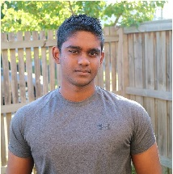
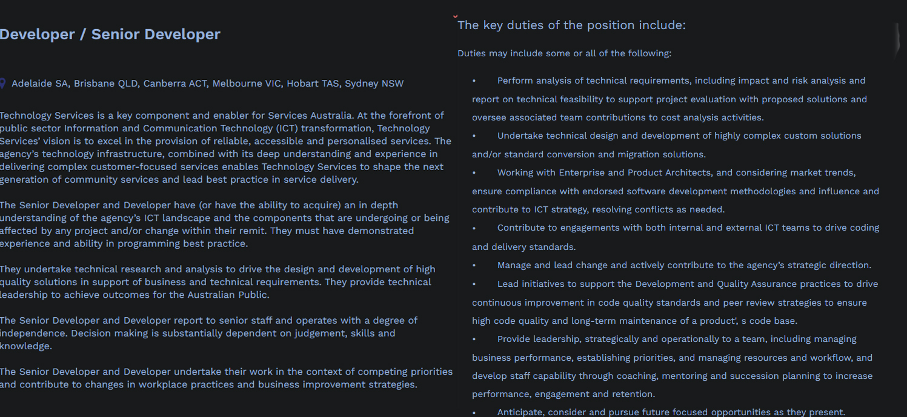
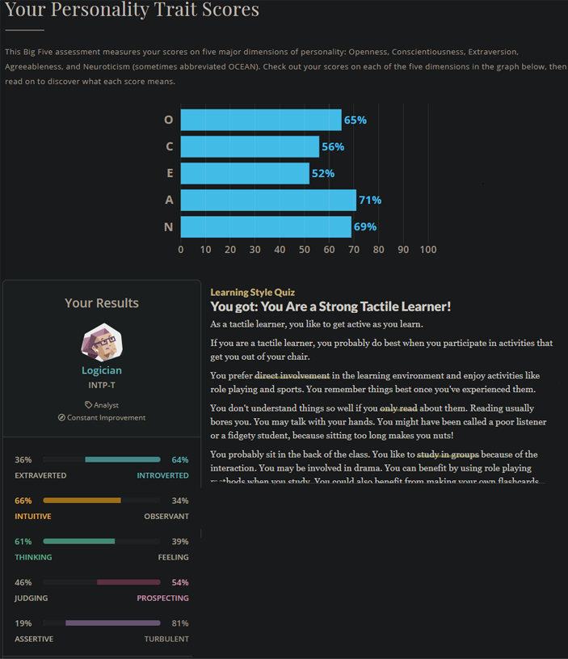

Personal Profile
Name: Deon Perera 
Student Number: s3824202
Email: s3824202@student.rmit.edu.au
Nationality: Born and raised in Sri Lanka.
Education: Completion of Year 12 (VCE)
Languages: English and Sinhalese
Hobbies!?
A recent hobby during lockdown, has been learning Python! I enjoy its simplicity and welcoming nature towards beginner programmers. My most recent program which I made as a side projecty is a web scraping application. This application gathers sports data from EPSN (sports website) and saves the information into an Excel file. I created the prorgam to collect the number runs and wickets per match, for all international cricket players. I believe this project helped me understand the power of programming.
Interest in IT
When did your interest in IT start?
I believe my interest towards IT started because I played video games at a young age and I was always curious to how the programs would work. Also, I have been able to fix up IT issues with my family and I found the process of identifying the issue and fixing it very satisfying. I have always been drawn towards IT, especially programming. I am curious about how a program would work. Furthermore IT, has offers several careers paths that intersts me especially freelance work.
Was there a particular event or person that sparked your interest?
There was not a single event or person that that sparked my interest. Instead, I developed a gradual growth of interest towards IT as I became older, maybe because I played quite a bit of video games when I was younger.
IT experience
I am a beginner to programming; however, I am currently I am studying Python through Udemy courses. I also have a low-level understanding of Java.
Why did you choose to come to RMIT?
I chose to study at RMIT, because it is a recognised University in Australia and I have had recommendations from my peers about it.
What do you expect to learn during your studies?
I hope to expand my knowledge and skills of IT, from my studies at RMIT. I hope the studies are practical and they develop desirable and in demand skills for employers and for myself.
Ideal
 Link to JobThis job involves creating programs and provide high quality IT solutions to support Services Australia. These programs may be to used by the public. This job is desirable because of several things. The first being, I will enjoy programming practical applications that can improve the quality of life of employees and customers – this is meaningful work. Also, working in the public sector there is less emphasis on KPIs and greater job security. Lastly, the pay is great.
Skills, qualifications and experience I currently have:
I don’t have many of the skills or experience required from this role. However,I have worked been in leadership positions at my work and I have intermediate knowledge of Python and I am studying more to imrprove my knowledge of this!
A plan describing how you will obtain the skills, qualifications and experience required for the position:
This job is a senior developer, this means prior experience as a developer is a prerequisite for this role. In the future, I may qualify for this role if I continue to build my programming skills, complete my degree, become a team leader in another role and get similar roles that are junior to this position. Furthermore, I should aim to get a job which involves solving high level problems. This can only be done by starting at a junior position and then increasing my job position incrementally, to accept bigger responsibilities and work.
Profile
What do the results of these tests mean for you?
There are several things that interest me from the test results. The first, the dangers of being too agreeable. People too high agreeableness often line themselves up to be exploited, especially in work environments. Furthermore, agreeable people do not like conflict, and this can make me not address immediate concerns or issues I have. This can cause issues to escalate unnecessarily. These problems are very undesirable, and they may also affect my performance in group work.
Supringly, the test gives an accurate analysis of my personality. I interpret the tests as accurate, however I believe personality trait are fluid and subject to external conditons. Also, the tests do not account for potential personality or behavioual change, by an individual exterting will power. Therefore, I believe tests are very limited in its ability to predict future behaviour.
How do you think these results may influence your behaviour in a team?
Due to having high agreeableness and low assertiveness, I may face issues such as not being included discussion, being too shy to challenge ideas and my contributions not being included the project. Therefore, I should extra attention to make sure I am heard and speak assertively when I contribute ideas or thoughts into a discussion.
How should you take this into account when forming a team?
When selecting a group, I should select like minded people. If my group members have very opposing personality traits to mine there may be internal conflict within the group. I should pay particular attention to the group members conscientiousness trait, which is the tendency to be organised and dependable. If this personality trait is too low or high compared to mine there can be frustration created within the group.
Developing a smartphone app
Overview!
This app uses phone location to control certain actions, within the phone itself and to external electronics. The app detects a marked location of the user and perform certain actions. For example, when the user enters the vicinity of the marked home location, such as their home, high performance mode will be enabled. However, when the phone leaves that area, the phone will revert to medium power saving mode. There will be many functions the user can select from and the app will also allow the user to customise these functions. The aim of this app is to improve quality of life by automating the boring stuff.
Motivation
This app allows the user to streamline minor day to day activities, to increase quality of life. This is done through automating the small and boring stuff. These tasks, although minor, will ultimately amass a significant amount of time throughout our life. I believe automation of these activities can help us spend this wasted time on meaningful matters. Furthermore, the safety features such as Driving mode, can reduce motor vehicle accidents. The National Safety council reports distractions and cell phone usage leads to 1.6 million crashes yearly. I believe with the use of this app, users’ drivers can reduce accidents.
Description of project
The welcome screen will be aesthetic, but simple. Emphasis will be made to maximise a user-friendly experience. A help button is available which will describe all available functionalities of the app. To proceed the user must select “Next”. This will navigate the screen to the next page.
To setup the app, the user be prompted to select their home location, through a feature like Google Maps. Next, they must select a radius around their home and choose functions they want to perform upon entering or exiting this area. The user can setup unlimited amount of locations and set functions to them.
This information will be used to determine what actions take. The app will work like this: perform task A if the user enters a marked location or perform task B when the user exists a marked location.
Below is a list of functions. The user will be asked to assign the functions to a location. More functions can be implemented, as this project develops further.
List of functions:To streamline daily working tasks, a user can select features to perform when a marked location is entered or existed. This will reduce time people spent every day, needlessly towards small tasks. Eventually, this wasted time will accumulate and I believe our time and energy should be reserved for essential responsibilities.
For example, if a user is travelling to her job, the app will switch to Driving mode. Smart phone location tracking can be used to detect if the user is driving, therefore manual activation is of this mode is not needed. Driving mode will enable Bluetooth, mute notifications, provide traffic data from Google Live traffic map, read out text messages and even play songs.
When the user arrives at their workplace, the app will update to the conditions set by the user when they customised it. The app can be configured to automatically turn on silent mode, change to power saving mode and other suitable functions for the work environment.
When the user returns home, the app can switch the phone to high performance mode, turn on thermostat and computer – although this may require a program to be installed on to the computer.
This app reaches its full potential when it is used in combination of Smart electronic devices. Currently, only a limited number of people are use Smart devices, this will hinder its effectiveness.
All functions of the app can be customised to the preference of the user. And, although different to implement, I’s possible to allow the user to write their own functions by coding it in. This will be an advanced feature and will require this mode to be manually enabled. For the control of external devices such as computers and Smart devices, all these electronics must be connected to the same Wi-Fi network.
Tool and Technologies
There are several development tools available for the creation of this app. For Android devices, BeeWare can be used. BeeWare is a collection of tools for building native user interfaces and has Java to Python integration, meaning the app can be coded with the Python language. Python programming is preferred by me, as I already have an intermediate understanding of it. tplight library for Python can be used to control TP-Link LB130 Smart Bulbs.
External libraries for Python will need to be imported to control external devices such as the computer, TV and Smart devices. One such as library is PyViera – allows control of Panasonic TV using Python.
Skills required
This project requires allot of programming knowledge and experience. This knowledge can be learned and practiced online from educational websites such as Udemy and Skill Share. The app will be first built to control the device functions, such as switching to silent mode, these functions will be easier to implement.
The larger problems will arise when using third party libraries. Third-party libraries allow control of Smart devices; however, this requires understanding the documentation for these libraries. Using external libraries can also bring in unwanted bugs, glitches and even version compatibility issues. However, I believe with time, this project is very feasible.
Outcome
If this project is successful it will increase the quality of life for its users. It will reduce the time they spent on minor tasks, which accrue over time. It may also act as a risk avoidance for motorists and keep drivers safer on the road. Overall, it will contribute to the user’s life and make their days easier, save them allot of time throughout the day, reserve their energy to tasks that are of genuine concern. Lastly, if Smart devices are extensively used in the future, the app can be developed further to integrate the Smart devices and then app will increase its popularity greatly.